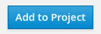
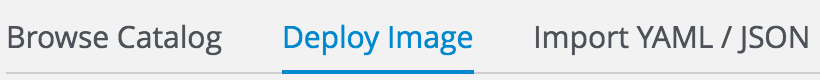
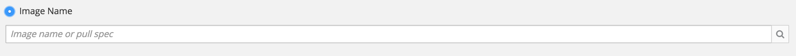
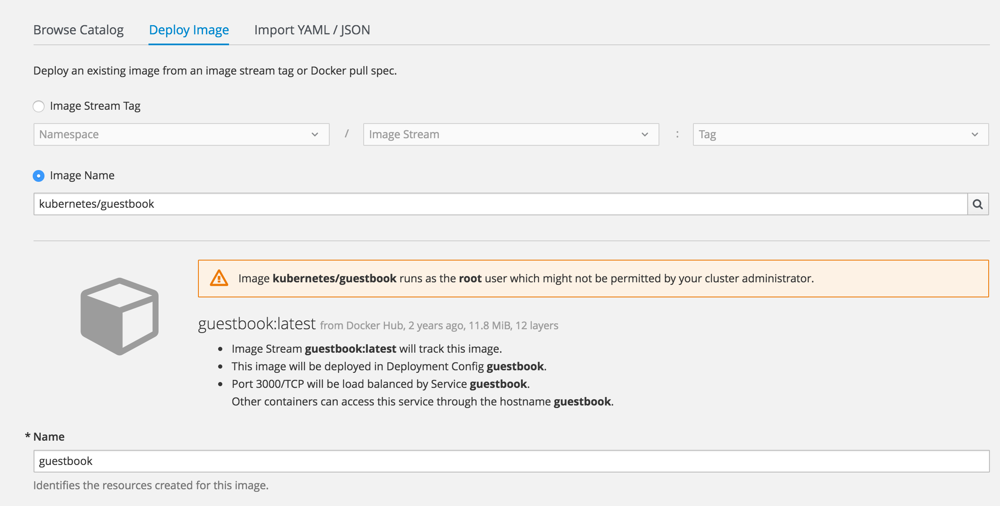
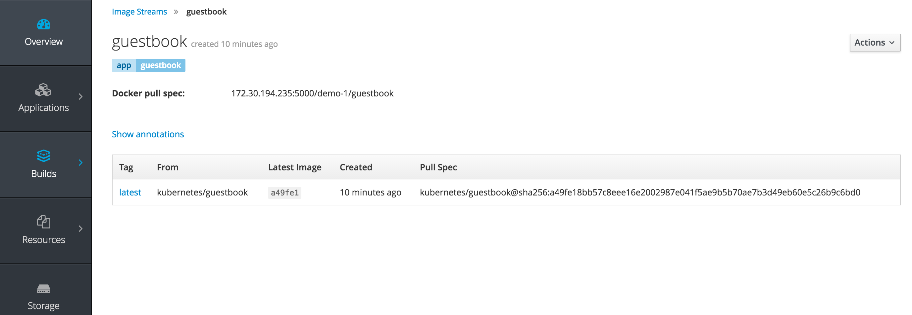
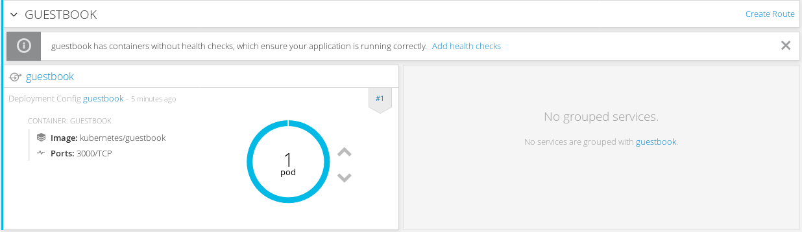
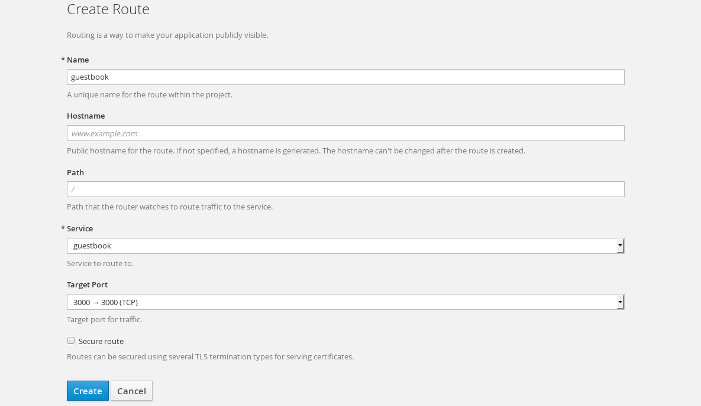
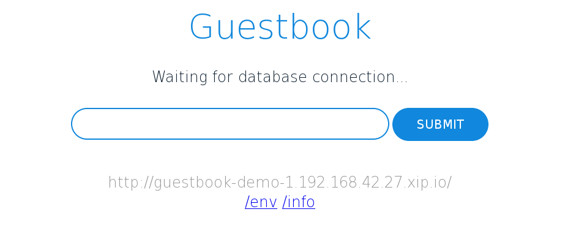

It's easy to get started with OpenShift whether you're using our app templates or bringing your existing docker assets. In this quick lab we will deploy an application using an exisiting docker image. OpenShift will create an image stream for the image as well as deploy and manage containers based on that image. And we will dig into the details to show how all that works.
Goto the terminal and type the following:
$ oc new-app kubernetes/guestbook
The output should show something similar to below:
--> Found docker image a49fe18 (17 months old) from docker Hub for "kubernetes/guestbook"
* An image stream will be created as "guestbook:latest" that will track this image
* This image will be deployed in deployment config "guestbook"
* Port 3000/tcp will be load balanced by service "guestbook"
--> Creating resources with label app=guestbook ...
ImageStream "guestbook" created
DeploymentConfig "guestbook" created
Service "guestbook" created
--> Success
Run 'oc status' to view your app.
Click "Add to Project"
Select the tab for "Deploy Image" from the top options
Select the option for "Image Name" and enter "kubernetes/guestbook", then click the magnifying glass to the far right to search for the image.
Observe default values that are populated in the search results
Scroll to the bottom and click "Create"
Try typing the following to see what is available to 'get':
$ oc get
Now let's look at what our image stream has in it:
$ oc get is
$ oc describe is/guestbook
An image stream can be used to automatically perform an action, such as updating a deployment, when a new image, in our case a new version of the guestbook image, is created.
The app is running in a pod, let's look at that:
$ oc describe pods
Let's look at the image stream.
Click on "Builds -> Images"
This shows a list of all image streams within the project.
Now click on the guestbook image stream
You should see something similar to this:

Good catch, your service is running but there is no way for users to access it yet. We can fix that from the web console or the command line. You decide which you'd rather do from the steps below.
In the command line type this:
$ oc expose service guestbook
To expose via the web console, click on "Overview" to get to this view
Notice there is no exposed route
Click on the "Create Route" link

This is where you could specify route parameters, but we will just use the defaults.
Click "Create"
You can also create secured HTTPS routes, but that's a topic for a more advanced workshop
Notice that in the web console overview, you now have a URL in the service box. There is no database setup, but you can see the webapp running by clicking the route you just exposed.
Click the link in the service box. You should see:

Let's clean up all this to get ready for the next lab:
$ oc delete all --all
In this lab you've deployed an example docker image, pulled from docker hub, into a pod running in OpenShift. You exposed a route for clients to access that service via thier web browsers. And you learned how to get and describe resources using the command line and the web console. Hopefully, this basic lab also helped to get you familiar with using the CLI and navigating within the web console.